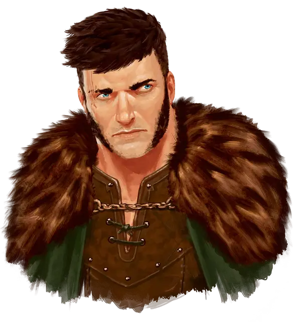

Сокол Охотник
Falcon the Hunter
Средний Гуманоид (Человек), нейтрально-добрый, именной НИП

Класс Доспеха 14 (проклёпанный доспех)
Хиты 112 (15к8 + 45)
Скорость 30 футов
| мод | спас | ||
|---|---|---|---|
| СИЛ | 14 | +2 | +2 |
| ЛОВ | 15 | +2 | +4 |
| ТЕЛ | 16 | +3 | +3 |
| мод | спас | ||
|---|---|---|---|
| ИНТ | 11 | +0 | +0 |
| МДР | 16 | +3 | +5 |
| ХАР | 15 | +2 | +2 |
Навыки Атлетика +4, Восприятие +7, Выживание +5
Чувства пассивное Восприятие 17
Языки Общий
Опасность 4 (1100 опыта)
Бонус мастерства +2
Особенности
Лучник. Когда Сокол попадает в цель при стрельбе из длинного или короткого лука, то наносит одну дополнительную кость урона (уже учтено в атаке длинным луком).
Снайпер. Дальнобойные атаки Сокола игнорируют укрытия на половину и три четверти.
Действия
Мультиатака. Сокол совершает три рукопашные атаки или две дальнобойные атаки.
Длинный меч. . Рукопашная атака оружием: +4 к попаданию, досягаемость 5 фт., одна цель. Попадание: 6 (1к8 + 2) рубящего урона или 7 (1к10 + 2) рубящего урона при атаке двумя руками.
Длинный лук. . Дальнобойная атака оружием: +4 к попаданию, дистанция 150/600 фт., одна цель. Попадание: 11 (2к8 + 2) колющего урона.
Описание
Искатели приключений встречаются с Соколом, когда посещают его охотничий домик в Невервинтерском лесу.